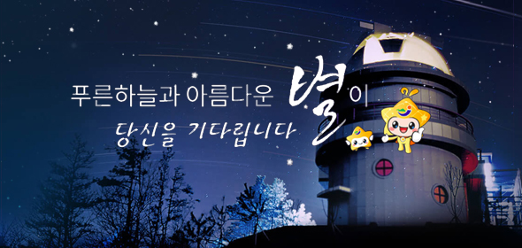
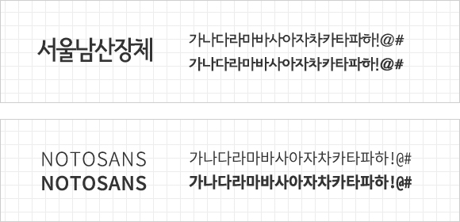

이 프로젝트는 천문과학관의 신비로운 느낌을 재해석하여 작업한 리뉴얼 사이트입니다. 청소년에게는 꿈과 희망을, 일반인들에게는 천체와 우주에 대한 궁금증을 해소하는 공간이라는 컨셉에 맞게 다양한 정보를 알기 쉽게 구성하고 누구나 다가가기 쉬운 콘텐츠로 느껴질 수 있도록 작업하였습니다.
장흥의 푸른 물을 상징하는 시원한 파란색을 사용하여 장흥의 깨끗함과 청량감을 강조하고 녹색이 주는 편안한 느낌을 통해 눈의 피로감을 덜어주며 더불어 성장해가는 장흥을 느낄 수 있도록 하였습니다. 보조색은 블루톤에 어울리는 진한 색감과 은은한 그레이 색상을 활용해 깨끗한 느낌이 배가 되도록 작업하였습니다. 따뜻하고 행복한 느낌의 오렌지 컬러는 어머니의 품같은 장흥의 따스함을 강조하는 의미로 사용되었습니다.
푸른하늘과 아름다운 별이라는 주제에 맞게 밤하늘에 별이 반짝이는 느낌을 연출하였으며, 클라이언트의 요구에 맞게 천문과학관 외관이 주가 되도록 작업하였습니다.

타이틀 서체는 어디에도 잘 어울리는 모던한 느낌의 서울남산장체를 곳곳에 활용하였고,본문 서체는 명시성과 가독성이 좋은 본 고딕을 활용하여 깔끔한 느낌을 주고자 하였습니다.

클라이언트의 요구사항에 따라 천문과학관 외관을 배경으로 하는 신비로운 느낌을 연출하였으며 다양한 컨텐츠를 편리하게 사용할 수 있도록 한 화면에 배치하였다. css3 애니메이션을 통해 별이 떨어지는 느낌을 주어 이용자들에게 흥미를 유도하고 마스코트는 비쥬얼 멘트에 삽입하여 자연스럽게 어우러지도록 작업하였다.
깔끔하고 직관적인 콘텐츠를 통해 홈페이지 이용자들에게 신뢰성을 주고, 다양한 콘텐츠 속에서 정확한 정보 전달을 위한 카테고리 분류를 통해 천문과학관 홈페이지 이용의 불편함이 없도록 콘텐츠를 구성하였다.